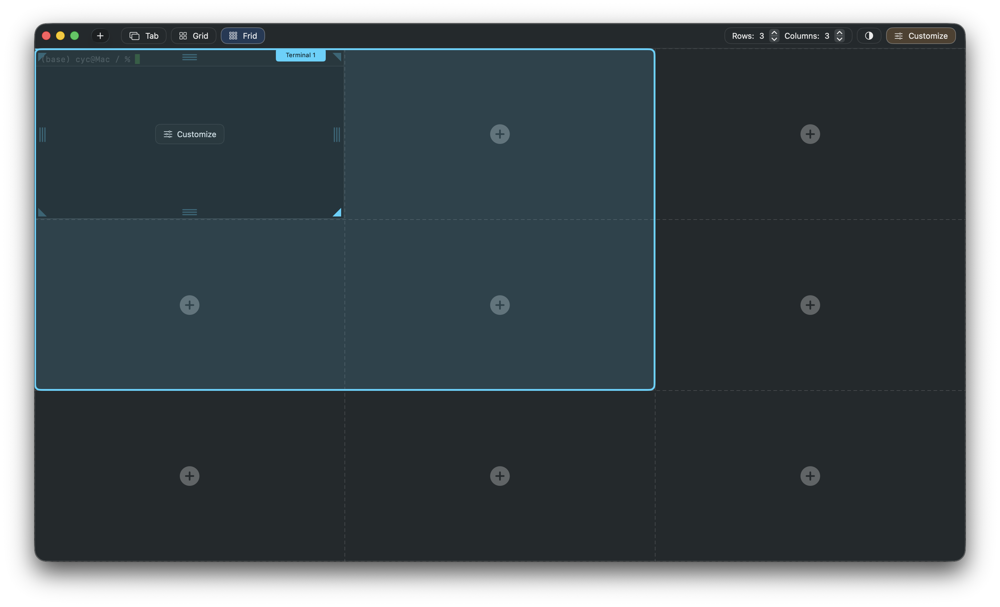
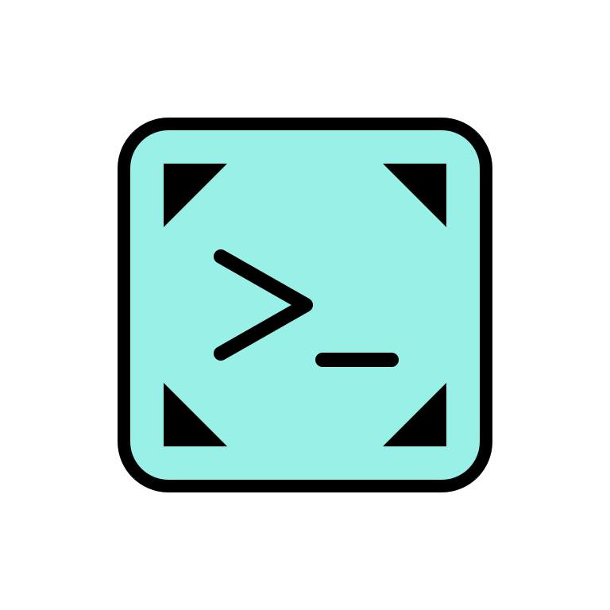
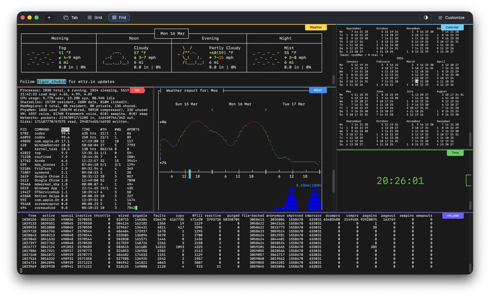
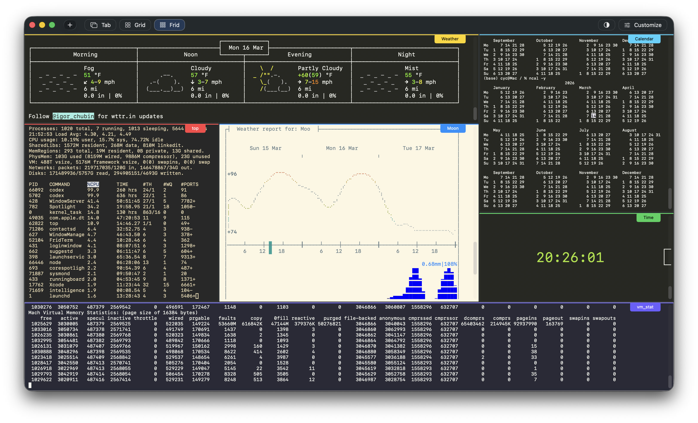

Mouse-first control
Resize and rebalance your workspace in seconds.
Pull boundaries, expand active work areas, and shrink background panes as your focus changes. The interface makes spatial editing immediate and obvious.


FridTerm - A macOS TerminalFridTerm replaces rigid splits with a flexible grid system. Drag terminals into place, resize them with the mouse, and build layouts that match your workflow.

Mouse-first control
Pull boundaries, expand active work areas, and shrink background panes as your focus changes. The interface makes spatial editing immediate and obvious.

Live color customization
Tune your terminal appearance without guesswork. FridTerm lets you adjust theme colors and immediately see them applied, making experimentation part of the workflow.

Multiple display modes
FridTerm supports classic tabs, structured grid layouts, and the full Frid mode so the same terminal session can be shown in the format that fits the moment.

Signature feature
FridTerm gives you a workspace you can shape directly with the mouse. Move terminals where they belong, create layouts around context, and keep related tasks visible at once.
